光の矢
当たった相手がしばらく光って見える
天と淵のあいだ WIKI
装備のほかの品 251 点。旅嚢に入る品も、ここにあります。
光の矢
当たった相手がしばらく光って見える
光る石の欠片
色の違う結晶の欠片
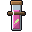
再生の薬
飲むと 45 秒、少しずつ傷がふさがる
夜目の薬
飲むと 3 分、暗い所がよく見える
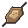
干し魚
塩をして干した魚。旅の糧
方位盤
真鍮の丸い方位盤
旅の矢
弓で射る矢。拾えばまた使える
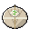
毒消し
毒・弱り・鈍りなど、悪い効き目だけを消す
水息の薬
飲むと 3 分、水の中でも息ができる
濃い癒しの薬
飲むとすぐに深い傷も癒える
火打ち石
打ち欠いた火打ち石
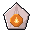
火除けの薬
飲むと 3 分、火と熱に焼かれない
炭
割れた炭の塊。窯や炉の火に
熾の雫
冷めない火の雫
熾火の棒
芯に熾火の残る黒い棒。炉を焚く
燻し肉
燻して日持ちさせた肉。腹にたまる
獣の革
広げてなめした獣の革
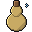
瓢箪の水筒（水入り）
水を汲んだ水筒
癒しの薬
飲むとすぐに傷が癒える
白紙の海図
何も描かれていない海図
空石
峰の下の、雷を通さない石
粘土の塊
丸めた粘土
糸巻き
木の糸巻きに巻いた糸
藍の栞
藍の押し花の栞
蜂蜜の小壺
甘い蜜。食べると毒が抜ける
金の粒
岩から採れる小さな金の粒
鉄の塊
打ち延ばした鉄。素材屋で売り買いする
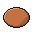
銅の塊
雷を逃がす柱にも使う銅の塊。
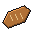
麦のパン
町の窯で焼いたパン
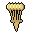
麦の束
縄で縛った麦。パンになる
余燼の心核
余燼の心臓から取れた、消えないおき火。いつか伝説の装備の材料になる
余燼の歌片
地上の余燼の祠で一つ使うと、その背のルートへ呼ばれる
余燼の燠石
余燼の巨神から欠けた、まだ温かい殻。余燼の装備を鍛える
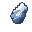
共鳴の欠片 (月)
月の主たちの響きが残る欠片。月専用の逸品と交換できる。
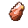
共鳴の欠片（余燼）
余燼の共鳴の欠片。余燼の専用の逸品と交換するには 30 個必要。余燼のヒロイック以上の装備を分解しても得られる
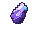
共鳴の欠片（古い）
巨神ごとに分かれる前の共鳴の欠片。どの巨神の専用の逸品とも交換できる。新しくは手に入らない
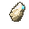
共鳴の欠片（岩鯨）
岩鯨の共鳴の欠片。岩鯨の専用の逸品と交換するには 30 個必要。岩鯨のヒロイック以上の装備を分解しても得られる
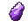
共鳴の欠片（深淵）
深淵の共鳴の欠片。深淵の専用の逸品と交換するのに 30 個いる。心臓の番人・層の主が落とし、深淵のヒロイックの品を分解しても得られる
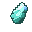
共鳴の欠片（潮殻）
潮殻の共鳴の欠片。潮殻の専用の逸品と交換するには 30 個必要。潮殻のヒロイック以上の装備を分解しても得られる
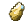
共鳴の欠片（雷翼）
雷翼の共鳴の欠片。雷翼の専用の逸品と交換するには 30 個必要。雷翼のヒロイック以上の装備を分解しても得られる
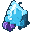
共鳴の結晶
巨神の歌が固まった結晶。装備を鍛えるのに使う
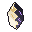
塔の欠片
あいだの塔の主が崩れたあとに残る、白と黒の混じった欠片。塔の装備を強める燃料（共鳴の炉で使う）。塔の店の値段にもなる。
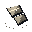
岩の粉 I
岩守り の力を宿した巨神の粉。装備の穴に差す。土地の敵が落とす。
◇ 武器: 攻撃力 +2%
◇ 防具: 防具強度 +0.3
武器の粉のスキル「地割れ」: 当てた敵のまわりに衝撃が走り、よろける
防具の粉のスキル「岩肌」: 2 秒、受けるダメージ −30%
一つの装備で、同じ種類の粉の段の合計が 4 以上のとき働く（武器は 4 回当てるごとに一度、防具は 8 秒に一度）
同じ段の粉を 3 つ持って使うと、一つ上の段の粉に変わる
岩鯨の心核
岩鯨の心臓から取れた、心の一片。いつか伝説の装備の材料になる
岩鯨の歌片
地上の岩鯨の祠で一つ使うと、その背のルートへ呼ばれる
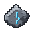
岩鯨の鱗片
岩鯨の背の敵が落とす。共鳴の炉で装備を鍛えるのに使う
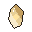
心核の欠片
神器を強める燃料 (共鳴の炉)。七つの心核のどれでも、しゃがんで使うと欠片 5 つに砕ける。
月の心核
止まった月の核の芯。アーティファクトの素材。
月の欠片
月の石の欠片。月の装備を強化する燃料。
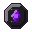
深淵の心核
心臓の番人の胸に残っていた、まだ脈を打つ核。伝説の装備の材料
潮の粉 I
潮歌い の力を宿した巨神の粉。装備の穴に差す。土地の敵が落とす。
◇ 武器: 最大マナ +3
◇ 防具: 最大マナ +2
武器の粉のスキル「引き潮」: 与えたダメージの 2 割を、そばの人と分けて癒す
防具の粉のスキル「満ち潮」: 3 秒、傷が癒えだす
一つの装備で、同じ種類の粉の段の合計が 4 以上のとき働く（武器は 4 回当てるごとに一度、防具は 8 秒に一度）
同じ段の粉を 3 つ持って使うと、一つ上の段の粉に変わる
潮殻の心核
潮殻の心臓から取れた、潮の一片。いつか伝説の装備の材料になる
潮殻の歌片
地上の潮殻の祠で一つ使うと、その背のルートへ呼ばれる
火の粉の粉
火の粉蛾のはねから落ちた粉。薬師のあつらえの材料になる
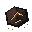
灰の粉 I
灰の鍛え人 の力を宿した巨神の粉。装備の穴に差す。土地の敵が落とす。
◇ 武器: クールダウン −2%
◇ 防具: 受けるダメージ −1%
武器の粉のスキル「熾の印」: 燃やし、燃え尽きると爆ぜる
防具の粉のスキル「火の粉」: 打った相手を燃やす
一つの装備で、同じ種類の粉の段の合計が 4 以上のとき働く（武器は 4 回当てるごとに一度、防具は 8 秒に一度）
同じ段の粉を 3 つ持って使うと、一つ上の段の粉に変わる
燠の殻
燠虫の背の板。冷めても、継ぎ目だけがほんのり赤い
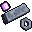
錨鉄
深淵の底から上がってきた、重く冷たい鉄。深淵の装備を鍛え、直す
雲上の心核
巡礼者の座で手に入る、七つ目の心核。しゃがんで使うと心核の欠片 5 つに砕ける。
雲間の干し果
雲の切れ間で干した果実。食べると30秒、静電を帯びない（雷蛾の放電が跳ばない）
雷翼の心核
雷翼の心臓から取れた、雷の一片。いつか伝説の装備の材料になる
雷翼の歌片
地上の雷翼の祠で一つ使うと、その背のルートへ呼ばれる
雷翼の羽軸
雷翼の羽の軸のかけら。雷翼の装備を共鳴の炉で鍛えるのに使う
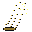
風の粉 I
風読み の力を宿した巨神の粉。装備の穴に差す。土地の敵が落とす。
◇ 武器: 攻撃速度 +2%
◇ 防具: 移動速度 +1%
武器の粉のスキル「つむじ」: まわりの敵を引き寄せて浮かせる
防具の粉のスキル「追い風」: 2 秒、足が速くなる
一つの装備で、同じ種類の粉の段の合計が 4 以上のとき働く（武器は 4 回当てるごとに一度、防具は 8 秒に一度）
同じ段の粉を 3 つ持って使うと、一つ上の段の粉に変わる
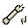
骨の粉 I
骨の射手 の力を宿した巨神の粉。装備の穴に差す。土地の敵が落とす。
◇ 武器: 吸血 1%
◇ 防具: ノックバック耐性 +3%
武器の粉のスキル「骨の呪い」: 4 秒、その敵の受けるダメージを増やす
防具の粉のスキル「骨の棘」: 打った相手へ、受けたダメージの 3 割を返す
一つの装備で、同じ種類の粉の段の合計が 4 以上のとき働く（武器は 4 回当てるごとに一度、防具は 8 秒に一度）
同じ段の粉を 3 つ持って使うと、一つ上の段の粉に変わる
鱗粉
雷蛾の羽の粉。市の武具屋へ持っていくと、矢に付けて光の矢にしてくれる
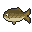
小鮒
都のまわり・ふつう
都のまわりの川でいちばんよく釣れる、くすんだ金茶の鮒。
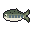
峠山女
風待・ふつう
体の横に楕円の斑が並ぶ峠の谷の魚。
巨神の夢を見た魚
どこでも・ごくまれ
巨神の背の稜線と星を体に宿した、ごくまれな魚。
月鰆
汐守・ふつう
背に月の波のような青い波線がある細長い鰆。
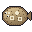
歌石鰈
鯨見・ときどき
砂色の平たい鰈。歌石のような白い輪の模様。
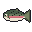
水車鱒
都のまわり・ときどき
水車のある川の鱒。桃色の帯と背の黒い点。
氷白魚
風待・ふつう
骨が透けて見える、透きとおった細い魚。
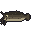
泥鯰
都のまわり・ふつう
平たい頭と長いひげ四本の、泥の色の鯰。
渦鮫の子
汐守・まれ
腹に渦の白い模様がある小さな鮫。まれ。
湯泉金魚
灰炉・ふつう
ひらひらの長い尾の、湯の泉の丸い金魚。
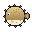
潮殻河豚
汐守・ときどき
貝殻の渦の模様の、ふくらんだ丸い河豚。
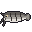
灰鯰
灰炉・ふつう
灰をかぶった体に煤の帯がある鯰。
灰鰊
鯨見・ふつう
群れで来る細い鰊。背に青黒い帯。
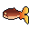
炎尾
灰炉・ふつう
尾が炎の形にゆらめく魚。
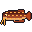
焔の竜魚
灰炉・まれ
鱗の縁が火の色に光る、ひげのある長い魚。まれ。
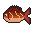
熾火鯛
灰炉・ときどき
体のひびからおき火が光る赤い鯛。
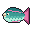
珊瑚鸚哥
汐守・ふつう
青緑に桃色の縁取り、くちばしのような口の魚。
真珠鯛
汐守・ときどき
薄紅の体に真珠の粒の列がある鯛。
稲妻鰻
風待・まれ
黄色く光る鰻。体に沿って稲妻が走る。まれ。
縞鮠
都のまわり・ふつう
体の真ん中を黒い縞が走る、小さな川の魚。
羽鰭飛魚
風待・ときどき
羽のような胸びれで風に乗る飛び魚。
苔鰍
鯨見・ふつう
大きな頭と棘の鰍。苔のまだらの緑。
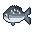
藤壺鯛
鯨見・ときどき
背に藤壺がいくつも付いた灰青の鯛。
藻の竜
汐守・まれ
海藻のようなひれが揺れる竜の落とし子。まれ。
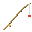
釣り竿
水辺で投げ、浮きが沈んだら引く。釣れる魚は土地ごとに違う。
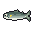
銀鮎
都のまわり・ふつう
細身の川の魚。えらの後ろに黄色い点がある。
鐘鳴り鯉
都のまわり・ときどき
都の堀の鯉。金色の大きな鱗が鐘の形に並ぶ。
雲鱒
風待・ふつう
雲のような柔らかいまだらの白い鱒。
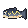
雷紋岩魚
風待・ときどき
背に稲妻の折れ線が淡く光る山の岩魚。
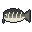
骨鱈
鯨見・ふつう
鯨骨のような白い筋が走る太い鱈。
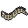
鯨髭鰻
鯨見・まれ
鯨のひげのような縞の長い鰻。まれ。
黒曜棘魚
灰炉・ときどき
黒曜石のような体に紫の照り、背に鋭い棘。
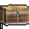
アンコモンの封印の箱 [Lv 1-10]
アンコモンの箱 · Lv 1〜10
武器・防具・アクセサリーのどれかが入っている
次の中身: まだ決まっていない（開けたときに決まる）
町の封切り師に渡すと開けてくれる
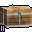
アンコモンの封印の箱 [Lv 11-20]
アンコモンの箱 · Lv 11〜20
武器・防具・アクセサリーのどれかが入っている
次の中身: まだ決まっていない（開けたときに決まる）
町の封切り師に渡すと開けてくれる
エピックの封印の箱 [Lv 11-20]
エピックの箱 · Lv 11〜20
武器・防具・アクセサリーのどれかが入っている
次の中身: まだ決まっていない（開けたときに決まる）
町の封切り師に渡すと開けてくれる
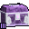
エピックの封印の箱 [Lv 21-30]
エピックの箱 · Lv 21〜30
武器・防具・アクセサリーのどれかが入っている
次の中身: まだ決まっていない（開けたときに決まる）
町の封切り師に渡すと開けてくれる
エピックの封印の箱 [Lv 31-40]
エピックの箱 · Lv 31〜40
武器・防具・アクセサリーのどれかが入っている
次の中身: まだ決まっていない（開けたときに決まる）
町の封切り師に渡すと開けてくれる
エピックの封印の箱 [Lv 41-50]
エピックの箱 · Lv 41〜50
武器・防具・アクセサリーのどれかが入っている
次の中身: まだ決まっていない（開けたときに決まる）
町の封切り師に渡すと開けてくれる
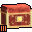
ヒロイックの封印の箱 [Lv 21-30]
ヒロイックの箱 · Lv 21〜30
武器・防具・アクセサリーのどれかが入っている
次の中身: まだ決まっていない（開けたときに決まる）
町の封切り師に渡すと開けてくれる
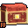
ヒロイックの封印の箱 [Lv 31-40]
ヒロイックの箱 · Lv 31〜40
武器・防具・アクセサリーのどれかが入っている
次の中身: まだ決まっていない（開けたときに決まる）
町の封切り師に渡すと開けてくれる
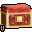
ヒロイックの封印の箱 [Lv 41-50]
ヒロイックの箱 · Lv 41〜50
武器・防具・アクセサリーのどれかが入っている
次の中身: まだ決まっていない（開けたときに決まる）
町の封切り師に渡すと開けてくれる
レアの封印の箱 [Lv 1-10]
レアの箱 · Lv 1〜10
武器・防具・アクセサリーのどれかが入っている
次の中身: まだ決まっていない（開けたときに決まる）
町の封切り師に渡すと開けてくれる
レアの封印の箱 [Lv 11-20]
レアの箱 · Lv 11〜20
武器・防具・アクセサリーのどれかが入っている
次の中身: まだ決まっていない（開けたときに決まる）
町の封切り師に渡すと開けてくれる
レアの封印の箱 [Lv 21-30]
レアの箱 · Lv 21〜30
武器・防具・アクセサリーのどれかが入っている
次の中身: まだ決まっていない（開けたときに決まる）
町の封切り師に渡すと開けてくれる
レアの封印の箱 [Lv 31-40]
レアの箱 · Lv 31〜40
武器・防具・アクセサリーのどれかが入っている
次の中身: まだ決まっていない（開けたときに決まる）
町の封切り師に渡すと開けてくれる
レアの封印の箱 [Lv 41-50]
レアの箱 · Lv 41〜50
武器・防具・アクセサリーのどれかが入っている
次の中身: まだ決まっていない（開けたときに決まる）
町の封切り師に渡すと開けてくれる
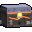
余燼の封印の箱
巨神の箱 · 余燼の専用装備
武器・防具・アクセサリーのどれかが入っている
次の中身: まだ決まっていない（開けたときに決まる）
町の封切り師に渡すと開けてくれる
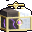
塔の箱
塔の箱 · あいだの塔の装備 (どれも神器)
武器・防具・アクセサリーのどれかが入っている
次の中身: まだ決まっていない（開けたときに決まる）
町の封切り師に渡すと開けてくれる
岩鯨の封印の箱
巨神の箱 · 岩鯨の専用装備
武器・防具・アクセサリーのどれかが入っている
次の中身: まだ決まっていない（開けたときに決まる）
町の封切り師に渡すと開けてくれる
淵の金の箱
金の箱 · 深淵のアーティファクトと伝説の武器
武器・防具・アクセサリーのどれかが入っている
次の中身: まだ決まっていない（開けたときに決まる）
町の封切り師に渡すと開けてくれる
潮殻の封印の箱
巨神の箱 · 潮殻の専用装備
武器・防具・アクセサリーのどれかが入っている
次の中身: まだ決まっていない（開けたときに決まる）
町の封切り師に渡すと開けてくれる
雲上の箱
雲上の箱 · 終章の神器 (武器・防具・アクセサリーのどれか一つ)
武器・防具・アクセサリーのどれかが入っている
次の中身: まだ決まっていない（開けたときに決まる）
町の封切り師に渡すと開けてくれる
雷翼の封印の箱
巨神の箱 · 雷翼の専用装備
武器・防具・アクセサリーのどれかが入っている
次の中身: まだ決まっていない（開けたときに決まる）
町の封切り師に渡すと開けてくれる
アスペクトの芯
ヒロイック以上の品から取り出した、スキルの書き換え。レアかエピックの武器か防具に刻む（1 装備に 1 つ）。
スキルの修飾ルーン
ひとつのスキルにだけ効くルーン。穴に差す。1 つのスキルに 1 枚だけ働く。
修飾の力の合計は ×2.0 まで
三日月の殻
殻背の兎の背にあった、三日月の形の殻板。縁が銀に光る。
下弦の弓
ジョブ: 弓使い（骨の射手）
必要 Lv 50
必要な基礎: 敏捷 24
レア · 月の専用装備
残像の腕が少し遅れて沿う弓。当たった相手に 1 秒後、残像の矢が刺さる (ダメージの 40%)。
「欠けていく弧ほど、遠くへ届く。」
共鳴の強化 +0 / +10
最大体力 +4%
矢のダメージ +6%
乗り笛
乗り笛。吹くと乗り物が目の前に来る。
右クリックで呼び、もう一度で帰す。旅嚢に入れていても、Y（旅嚢の道具キー）の短押しで呼べる
伝承の書
見たものや読んだものが、ひとりでに記されていく。右クリックで開く（旅嚢の中なら、道具の輪から）
余燼の呼び鈴
灰をかぶった小さな鈴。鳴らすと、足もとの熱が身じろぎして形になる
鳴らす → 子が足もとに現れる → 乗る → 海図で行き先を選ぶ。仲間（最大 6 人）も乗れる。成体の巨神は動かない。子は地を駆け、溶岩を渡る。陸の道が続く所だけ。深い水は渡らない
出会った巨神の笛だけが使える。いつ吹いても子が来る（眠っている巨神の子も、戦いの最中も、水の中も）
余燼の灯
ヒロイック · 余燼の専用装備
必要 Lv 28
アクセサリースロットに付けているあいだ効く
アクセサリースロットに付けていると、倒れるほどのダメージを一度だけこらえ、まわりを焼く（一度燃えると600秒は眠る）
「灯は、倒れる前に一度だけ吠える。」
側の目の弓
ジョブ: 弓使い（骨の射手）
必要 Lv 50
目覚め 0/3・次まで あと 300 体
神器 · あいだの塔
側の目を据えた弓。「凝視の矢」同じ敵に当て続けると +10% ずつ（10 重ねで +100%）。別の敵に当てると数え直す。欠点: 雲穿ちが貫かなくなる。
「目は一人だけを見る。見られた者は逃げられない。」
共鳴の強化 +0 / +10
矢のダメージ +20%
マナ回復 +11%
スキルの威力 +9%
光る海のイソギンチャク
手に持つと、暗い水をうっすら照らす。魚は灯りのそばで静まる。
灯りの台は三つ、灯りも三つ。全部の台にともすと、出口の戸が開く。
共鳴の護符
エピック · 岩鯨の専用装備
必要 Lv 8
護符スロットに付けて [H] で使う
使うと傷がふさがり、しばらく身を守る（使ったあと1分間は使えない）
「傷は、歌で塞ぐ。昔からそうだ。」
呼び声の弓
ジョブ: 弓使い（骨の射手）
必要 Lv 46
必要な基礎: 敏捷 24
エピック · 深淵の下の層の品
矢が 6 ブロック内の敵へ曲がる（+10%）
「呼べば応える。応えた者を射る」
共鳴の強化 +0 / +10
矢のダメージ +13%
スキルの威力 +6%
最大体力 −5%
土掘り
利き手に持ったとき：
45 攻撃力
1 攻撃速度
塩の砥石
使うと 20 分のあいだ刃が塩で研がれる（攻撃 +18）。水の中でも切れ味が落ちず、水の中の一撃は塩が散ってもう少しダメージが増える
塩の結晶
深淵の塩の層の敵が落とす。荷運びのロクが、日持ちのする干し肉と取り替えてくれる
塩結晶
潮が置いていった白い結晶。旅装・砥石・塩漬けの材料になる
塩鴉の弓
ジョブ: 弓使い（骨の射手）
必要 Lv 32
必要な基礎: 敏捷 24
レア · 深淵の上の層の品
3 本目ごとに矢が 3 本に分かれる（各 60%）
「塩鴉は光る物を集め、弓は命を集める」
共鳴の強化 +0 / +10
クールダウン −5%
矢のダメージ +6%
天の環
神器 · あいだの塔
必要 Lv 50
アクセサリースロットに付けているあいだ効く
白い羽を開いた金の環。体力が満ちているあいだ、与えるダメージ +8%。
「満ちた者だけが、天に手を伸ばせる。」
天の鍵
四つの欠片が一つになった。空を指さず、足もとへ向かってかすかに脈を打つ
天の鍵の欠片
ほのかに温かく、かすかに脈打つ。四つそろえば、雲の上へ続く扉が開くという
始祖の小鐘
右クリックで澄んだ一打ち。都の中で鳴らすと、大鐘楼が応える
「鳴らしたら、誰かが応える。それが鐘というものだよ」
小真珠
潮だまりの貝が抱いていた小さな真珠。旅装と粉薬の材料になる
小舟
板張りの小舟。水の上で使うと浮かべて乗れる
岩の砥石
使うと 20 分のあいだ、刃が研がれる（攻撃 +15）
岩殻の護り糸
殻の裏の糸。鼓動守 (岩鯨) の材料
岩殻片
灰青の殻の欠片。旅装の材料
岩鯨の呼び笛
鯨の骨をくり抜いた笛。吹くと、岩鯨の仔が雲の向こうから応える
吹く → 子が足もとに現れる → 乗る → 海図で行き先を選ぶ。仲間（最大 6 人）も乗れる。成体の巨神は動かない。子は空を泳ぎ、はじまりの地・覚えた碑・出会った巨神のもとへどこへでも運ぶ。
出会った巨神の笛だけが使える。いつ吹いても子が来る（眠っている巨神の子も、戦いの最中も、水の中も）
岩鯨の補強板
ヒロイック · 岩鯨の専用装備
必要 Lv 10
アクセサリースロットに付けているあいだ効く
アクセサリースロットに付けると、岩鯨の甲殻を2部位身につけたとき防具強度+3、4部位身につけたときノックバック耐性
「殻を足せば、重さが増すだけだ。それでも。」
嵐の目の羽根
ヒロイック · 雷翼の専用装備
必要 Lv 22
アクセサリースロットに付けているあいだ効く
アクセサリースロットに付けていると、飛んでくる矢や弾を風がそらす（そらすと3秒は眠る）
「嵐の目は、いつもこちらを見ている。」
嵐の護符
エピック · 雷翼の専用装備
必要 Lv 20
護符スロットに付けて [H] で使う
使うと、次の 3 回の攻撃に雷が落ちる（使うと30秒は眠る）
「雷は、呼ばれた数だけ落ちる。」
嵐纏の足環
エピック · 雷翼の専用装備
必要 Lv 20
アクセサリースロットに付けているあいだ効く
アクセサリースロットに付けていると、滑空が速くなり、落下のダメージがやわらぐ
「巡りの輪。落ちる者に、風を貸す。」
巡礼の羽飾り
神器 · 雲海の神器
必要 Lv 50
アクセサリースロットに付けているあいだ効く
金の軸の白い風切羽。落下によるダメージがなくなる。空中で打つダメージ +8%。
「巡礼者は落ちても、羽が受け止めた。」
帯電綿
触るとぱちりと鳴る綿。縫い目に詰めると雷を逃がす
影の欠片
前の私の影が残した欠片。持つと、三秒前の手の重さが分かる
影の綴じ糸
影の綴じ手の帯を留めていた、星の光の糸。
旅の盾
ジョブ: 戦士（岩守り）
木の板を鉄の縁と帯で留めた丸盾。構えると正面のダメージを防ぐ
星の欠片
新月の谷に落ちた星のかけら。三つで台地の門が開く。
星の灯
星の溜まりで覚えた星灯り。足もとを照らし、影に潜むものを引き出す。
右クリック: 足もとに星の印を置く (30 秒・同時に 2 つまで)
星落ちの弓
ジョブ: 弓使い（骨の射手）
必要 Lv 50
必要な基礎: 敏捷 24
ヒロイック · 月の専用装備
先に星を灯した弓。矢が当たったところへ 0.8 秒後に星が落ち、まわりの敵に矢のダメージの 40% を与える。
「落ちる星は、狙ったところに落ちたがる。」
共鳴の強化 +0 / +10
スキルの書き換え: 足止めの矢 ─ 星落ちの足止め
矢のダメージ +16%
最大体力 +4%
スキルの威力 +7%
防御 −6%
月の涙
涙の形の小瓶に、青白く光る月の雫。
飲むと 30 秒のあいだ、次に受けるダメージを一度だけ 0 にする (次に使えるまで 60 秒)
月の砂
砂這いの甲羅にこびりついていた、青白い細かな砂。
月の砂時計
月の砂が落ちきらない砂時計。満月の野の月の溜まりでもらう。
右クリック: 2 秒、まわりの敵と飛び物と満ち引きの石を止める (月の上で。12 秒に一度)
月の錘
天秤の岩の手前の皿に載せる錘。崖を離れると山へ戻る。
月潮の真珠
ヒロイック · 潮殻の専用装備
必要 Lv 16
アクセサリースロットに付けているあいだ効く
アクセサリースロットに付けていると、ダメージを大きく受けたとき泡の盾が身を包む（一度包むと90秒は眠る）。
「月が引くものを、泡が覚えている。」
棘針
骨の棘から作った針。旅用の矢の材料になる
歩哨の割符
刻み目のある骨の割符。老いた歩哨が、取りに来なかった誰かのために持っていた。
泡袋
潮殻の背の敵が落とす、泡の詰まった袋。薬師が 4 つを鐘銭 1 で買い取る
海鳥の弓
ジョブ: 弓使い（骨の射手）
必要 Lv 12
アンコモン · 潮の浜の品
矢の速さ +20%
「海鳥は風の上で眠る。矢もそうだ」
共鳴の強化 +0 / +10
クールダウン −4%
矢のダメージ +5%
淵の鎖
神器 · あいだの塔
必要 Lv 50
アクセサリースロットに付けているあいだ効く
黒い石の輪をつないだ鎖。体力が 3 割以下のあいだ、受けるダメージ ×0.80。
「落ちかけた者を、淵がつなぎとめる。」
温石
手に持つと、どちらの手が温かいかで余燼の巨神の向きが分かる
日の沈むころに陸で握ると、そばで眠るよう頼める
測量士の錘
ヒロイック · 深淵の専用装備
必要 Lv 42
アクセサリースロットに付けているあいだ効く
アクセサリースロットに付けていると、深いほど与えるダメージが増える（深淵では深さ 40 ごとに +1%、最大 +12%。地上では y 64 から 16 下がるごとに +1%、最大 +8%）。落下のダメージ −30%
「錘は嘘をつかない。深さだけを告げる。」
測鉛の弓
ジョブ: 弓使い（骨の射手）
必要 Lv 40
必要な基礎: 敏捷 24
エピック · 深淵の専用武器
深さを測る鉛を両端に下げた弓。
「鉛は、底に着いたことを糸で伝える。」
共鳴の強化 +0 / +10
移動速度 +8%
クールダウン −4%
スキルの威力 −7%
満月の環
ヒロイック · 月の専用装備
必要 Lv 50
アクセサリースロットに付けているあいだ効く
満月の石を抱いた銀の環。月の上か夜のあいだ、3 秒ごとに体力 1 回復 (満月のときは 2 秒ごと)。
「巡る月を、指の上で止めておく。」
潮の刻みの砂時計
使うと、次の干潮と満潮までの秒数が分かる（世界の潮。30 秒に一度）
潮の塩漬け
昆布を塩で漬けた浜の糧。60 秒、水の中で息が続く
潮干しの貝
潮殻の背の敵が落とす、潮で干からびた貝。食べると体力が少し戻る。薬師が 4 つを鐘銭 1 で買い取る
潮殻の呼び貝
珊瑚色の口をした巻貝。耳に当てると、遠い潮の満ち引きが聞こえる
吹く → 子が足もとに現れる → 乗る → 海図で行き先を選ぶ。仲間（最大 6 人）も乗れる。成体の巨神は動かない。水際で吹く。子は海の上を滑り、海辺から海辺へ運ぶ（陸は短く転がるだけ）
出会った巨神の笛だけが使える。いつ吹いても子が来る（眠っている巨神の子も、戦いの最中も、水の中も）
潮殻の弓
ジョブ: 弓使い（骨の射手）
必要 Lv 14
必要な基礎: 敏捷 14
エピック · 潮殻の専用武器
潮殻の珊瑚が腕になった弓。
「珊瑚は、潮の向きに枝を伸ばす。」
共鳴の強化 +0 / +10
最大体力 +5%
矢のダメージ +8%
スキルの威力 −7%
潮殻の殻片
潮殻の甲羅のかけら。潮殻の装備を共鳴の炉で鍛えるのに使う。薬師が強い薬を作るときの材料にもなる
潮見の貝
手に持つと、潮殻の巨神のいる向きと遠さ、次の干潮までの時間が画面の下に出る
潮鳴りの護符
エピック · 潮殻の専用装備
必要 Lv 14
護符スロットに付けて [H] で使う
鳴らすと潮の衝撃が広がり、まわりの敵を押し返して足を鈍らせる（使うと45秒は鳴らせない）。
「鳴らせ。海は、呼ばれるのを待っている。」
火の粉の弓
ジョブ: 弓使い（骨の射手）
必要 Lv 28
必要な基礎: 敏捷 22
ヒロイック · 余燼の専用武器
焼けた枝の腕の裂け目から、橙の光が漏れる弓。
「焼けた枝にも、春の筋が残っている。」
共鳴の強化 +0 / +10
スキルの書き換え: 雲穿ち ─ 火の粉の矢
マナ回復 +15%
クールダウン −5%
矢のダメージ +10%
スキルの威力 −8%
火口の大弓
ジョブ: 弓使い（骨の射手）
必要 Lv 30
必要な基礎: 敏捷 24
ヒロイック · 灰の荒野の品
常に 火のダメージ −20%。満ちて放った矢が当たると爆ぜる（まわり 2.5 に 60%・燃やす）
「火口の縁で張った弦は、熱を放さない」
共鳴の強化 +0 / +10
マナ回復 +15%
クールダウン −5%
最大体力 +4%
スキルの威力 −8%
灯の灰
灯りを消したあとに残る灰。まだほのかに温かい
灯台の大弓
ジョブ: 弓使い（骨の射手）
必要 Lv 48
必要な基礎: 敏捷 24
ヒロイック · 月の面の品
満ちて 2 秒保つと光の矢（直線 24 の範囲にいる全部の敵に ×1.5）
「灯台の矢は、迷った船を一度だけ照らす」
共鳴の強化 +0 / +10
マナ回復 +15%
クールダウン −5%
スキルの威力 +7%
防御 −6%
灯籠の弓
ジョブ: 弓使い（骨の射手）
必要 Lv 38
必要な基礎: 敏捷 24
エピック · 深淵の上の層の品
当たった相手を 6 秒光らせる（仲間全員の与えるダメージ +10%）
「灯籠の矢は、落ちた所を照らし続ける」
共鳴の強化 +0 / +10
矢のダメージ +13%
移動速度 +5%
スキルの威力 −7%
灯籠の護符
エピック · 深淵の専用装備
必要 Lv 40
護符スロットに付けて [H] で使う
護符スロットに付けて使うと、足もとに灯りを置く（半径 8、60 秒。光の術の灯りと同じ）。まわりの敵を光らせて押し返し、自分は 30 秒夜目が利く。クールダウン 45 秒
「消えた灯籠の数だけ、闇が近い。」
灰の冷やし水
飲むと体の芯の熱が引き、しばらく火に強くなる（余燼の背の熱 −40・耐火 30 秒）
灰の弓
ジョブ: 弓使い（骨の射手）
必要 Lv 26
必要な基礎: 敏捷 22
エピック · 余燼の専用武器
余燼の鉄を腕にした弓。
「鉄は冷えても、熱を忘れない。」
共鳴の強化 +0 / +10
最大体力 +5%
マナ回復 +7%
防御 −5%
灰の護り糸
古い灰の番人の背の釜にあった編みかけの糸。旅の職人が鼓動守に編む
灰ひきずりの鉤弓
ジョブ: 弓使い（骨の射手）
必要 Lv 26
必要な基礎: 敏捷 22
エピック · 灰の荒野の品
当たった相手を 2 ブロック手前へ引き寄せ、1.5 秒遅くする
「灰をひきずる鉤は、逃げる足を覚える」
共鳴の強化 +0 / +10
マナ回復 +12%
最大体力 +3%
防御 −5%
灰焼きのパン
灰の上で焼いた固いパン。腹が落ち着くと、体の芯の熱も引く（吸収 II 60 秒・余燼の背の熱 −15）
灰麻
灰の中でも枯れない麻。冷やし水に漬ける
焦げ羽
雷に先を焼かれた羽。軽く、旅装と小旗に使う
煤の団子
煤が固まって丸くなったもの。小さく、軽い
煤の砥石
使うと刃を研ぐ（煤の刃: 攻撃 +26、20 分）。灰の番人の殻へ 1.5 倍のダメージ
煤鉄
灰の地の煤けた鉄。砥石と、鼓動守の編み直しに使う
熾りの護符
エピック · 余燼の専用装備
必要 Lv 26
護符スロットに付けて [H] で使う
使うと、体にたまった熱を護符が吸い、まわりの敵へ吐き出す（使うと50秒は熱がたまらない）
「吸った熱は、いつか誰かに返る。」
熾火の外套
エピック · 余燼の専用装備
必要 Lv 26
アクセサリースロットに付けているあいだ効く
アクセサリースロットに付けていると、熱がたまりにくく、火と溶岩のダメージがやわらぐ（火そのものは防がない）
「裏地には、まだ私の体温がある。」
熾火の角杯
おき火を溶かした温かい飲み物。余燼の背で飲むと熱がたまりにくくなり、ほかの場所では少しのあいだ火を防ぐ
珊瑚の弓
ジョブ: 弓使い（骨の射手）
必要 Lv 16
必要な基礎: 敏捷 14
ヒロイック · 潮殻の専用武器
真珠の腕から珊瑚の枝が伸びる弓。
「潮の引く日にだけ、弦は鳴る。」
共鳴の強化 +0 / +10
スキルの書き換え: 骨の罠 ─ 珊瑚の罠
最大体力 +6%
マナ回復 +9%
スキルの威力 +7%
防御 −6%
珊瑚の盾
ジョブ: 戦士（岩守り）
必要 Lv 14
必要な基礎: 筋力 14
エピック · 潮殻の専用武器
構えている間は、防げない向きからのダメージもやわらげる。防いだ相手には珊瑚の棘が刺さる。
「とげは、守りたい者のために生えた。」
特性は、手にしたときに定まる
共鳴の強化 +0 / +10
近接ダメージ +12%
スキルの威力 +6%
攻撃速度 −5%
瓢箪の水筒
水場で使うと水を汲める
疾風の弓
ジョブ: 弓使い（骨の射手）
必要 Lv 22
必要な基礎: 敏捷 18
ヒロイック · 雷翼の専用武器
銅の腕が稲妻のように折れる弓。
「まっすぐ飛ぶ雷など、ありはしない。」
共鳴の強化 +0 / +10
スキルの書き換え: 天の驟雨 ─ 疾風の驟雨
マナ回復 +15%
最大体力 +4%
矢のダメージ +10%
スキルの威力 −8%
真珠の粉薬
真珠を挽いた粉。飲み下すとすぐに傷がふさがり (体力 60)、浮く体と重い足が戻る
真珠の護り糸
真珠色に光る細い糸。鼓動守 (潮殻) の材料
真珠層の弓
ジョブ: 弓使い（骨の射手）
必要 Lv 16
必要な基礎: 敏捷 15
レア · 潮の浜の品
矢が 1 体を貫通する
「真珠の層は、波が千年かけて塗った」
共鳴の強化 +0 / +10
スキルの威力 +8%
クールダウン −3%
破れたページ
右クリックで読むと、伝承の書に写される（旅嚢の中なら、道具の輪から）
祠の弓
ジョブ: 弓使い（骨の射手）
必要 Lv 1
コモン · 島の祠の武器
島の祠が射手に授ける弓。素朴だが、よくしなる。
「流木は、海の上でしなりを覚えた。」
共鳴の強化 +0 / +10
矢のダメージ +6%
移動速度 +2%
秘伝の巻
いまのジョブのスキルに上乗せする秘伝が、一つ書かれている。読むたびに段が上がる（III まで）。
使うと読む
稲光の弓
ジョブ: 弓使い（骨の射手）
必要 Lv 42
必要な基礎: 敏捷 24
レア · 深淵の下の層の品
当たると 25% で雷（矢のダメージの 100%）
「稲光の後、音が来る前に終わっている」
共鳴の強化 +0 / +10
移動速度 +7%
スキルの威力 +5%
空見の肩掛け
見た目だけの品。右クリックで羽織る・外す。強さは変わらない
「星の位置は、目で覚えるものじゃない。肩で覚えるのさ」
約束の小鈴
神器 · 雲海の神器
必要 Lv 50
アクセサリースロットに付けているあいだ効く
四つの灯を連れた金の小鈴。倒れた仲間を起こす速さ ×1.5。起こした仲間は 3 秒の守り (受けるダメージ ×0.7)。
「鳴らせば、前の自分たちが手を貸す。」
縄の結び目
吹き抜けの縄に残る結び目。どうしてもほどけない
苔の護石
レア · 岩鯨の専用装備
必要 Lv 8
アクセサリースロットに付けているあいだ効く
アクセサリースロットに付けると、苔の上で体力が少しずつ戻る
「苔は、遅いものにだけ根づく。」
苔の軟膏
足の鈍りを治し、少しのあいだ傷を癒やす
貝の欠け
珊瑚色の貝の欠片。砥石と飾りの材料になる
逆さ吊りの長弓
ジョブ: 弓使い（骨の射手）
必要 Lv 40
必要な基礎: 敏捷 24
ヒロイック · 深淵の上の層の品
常に 落下ダメージ −50%。満ちた矢で 1.5 秒吊る（主は遅く III）、吊った相手に +30%
「吊られた者は、遠くまでよく見える」
共鳴の強化 +0 / +10
クールダウン −8%
矢のダメージ +10%
スキルの威力 +7%
最大体力 −6%
道の固焼き
骨の粉を練り込んで固く焼いた旅の糧。60 秒、吸収の護りがつく
遠眼鏡の長弓
ジョブ: 弓使い（骨の射手）
必要 Lv 44
必要な基礎: 敏捷 24
エピック · 深淵の下の層の品
満ちて 1 秒保つと、次の矢 +35%
「遠眼鏡で見えるなら、もう届く」
共鳴の強化 +0 / +10
最大体力 +5%
矢のダメージ +8%
スキルの威力 −7%
避雷の油
銅を溶かした油。飲むと 90 秒、感電と雷のダメージが半分になる。雷は高い銅へ逃げる、と覚える
銅線
細く伸ばした銅。旅装の縁、砥石、油に使う
鐘銭
鐘の国の古い銭。都の店で使える。
頼み・敵・売り買いで手に入る
雛鷲の長弓
ジョブ: 弓使い（骨の射手）
必要 Lv 19
必要な基礎: 敏捷 17
エピック · 嵐の高地の品
15 ブロックより遠い相手に +25%
「雛鷲は最初の獲物を、決して外さない」
共鳴の強化 +0 / +10
移動速度 +8%
矢のダメージ +8%
防御 −5%
雲上の干し肉
日持ちのする干し肉。食べると体力が戻り、30 秒のあいだ、落ちるのがゆっくりになる
雲雀の弓
ジョブ: 弓使い（骨の射手）
必要 Lv 50
必要な基礎: 敏捷 24
ヒロイック · 雲海の品
常に 落下ダメージなし。空中で放つ矢は 3 本に分かれ（各 70%）、×1.15
「雲雀は雲の上で歌い、矢も雲を越える」
共鳴の強化 +0 / +10
スキルの威力 +12%
最大体力 +4%
マナ回復 +9%
防御 −6%
雷の砥石
使うと 20 分のあいだ刃に雷が宿る（攻撃 +22）。当てるたびに小さな火花が散る
雷の護り糸
指がしびれる白い糸。鼓動守（雷翼）の材料になる
雷の銅片
深淵の雷と灰の層の敵が落とす。荷運びのロクが取り替えてくれる
雷淵の弓
ジョブ: 弓使い（骨の射手）
必要 Lv 22
必要な基礎: 敏捷 18
★ 伝説 · 雷翼の専用武器
雷雲の底で曲がった弓。矢の止まった所へ、遅れて雷が落ちる
「雷は、落ちる前に、いちど深く息を吸う。」
共鳴の強化 +0 / +10
スキルの書き換え: 雲穿ち ─ 天落とし
スキルの威力 +13%
最大体力 +4%
マナ回復 +10%
防御 −7%
雷翼の呼び羽
雷の走る風切り羽。高く掲げると、嵐の中で小さな羽が応える
掲げる → 子が足もとに現れる → 乗る → 海図で行き先を選ぶ。仲間（最大 6 人）も乗れる。成体の巨神は動かない。子は低く飛んで稜線を渡る。陸の行き先だけ。広い海の上は渡らない
出会った巨神の笛だけが使える。いつ吹いても子が来る（眠っている巨神の子も、戦いの最中も、水の中も）
雷翼の弓
ジョブ: 弓使い（骨の射手）
必要 Lv 20
必要な基礎: 敏捷 18
エピック · 雷翼の専用武器
放つ矢が重い。当たった敵は光り、そばの別の敵へ小さな雷が跳ぶ
「矢は、翼の骨から生まれた。」
共鳴の強化 +0 / +10
矢のダメージ ×1.75
クールダウン −6%
スキルの威力 +6%
防御 −5%
霞鳥の弓
ジョブ: 弓使い（骨の射手）
必要 Lv 50
目覚め 0/3・次まで あと 300 体
神器 · 雲海の神器
腕は霞鳥の灰白の翼。「霞隠れ」矢が当たった場所に 4 秒の霞。自分の霞の中にいるあいだ敵に見失われ、矢のダメージ +20%。欠点: 最大体力 −15%。
「霞の中では、鳥だけが道を知っている。」
共鳴の強化 +0 / +10
移動速度 +13%
矢のダメージ +12%
マナ回復 +11%
風切りの弓
ジョブ: 弓使い（骨の射手）
必要 Lv 22
必要な基礎: 敏捷 19
レア · 嵐の高地の品
当たった矢が、近くの敵へ 1 回跳ねる（50%）
「風を切れば、矢は風より先に着く」
共鳴の強化 +0 / +10
矢のダメージ +10%
移動速度 +4%
風干しの団子
峰の風で干した団子。体が軽くなり、落ちるのがゆっくりになる（吸収 II 60 秒・落下速度低下 20 秒）
風見鶏
鶏は、風ではなく嵐のほうを向く
空の見える高い所で掲げると、嵐を呼べる
風読みの小旗
立てると 30 秒、風下へ細い光の筋が伸び、次の嵐までの目安が分かる（30 秒に一度。なくならない）
骨のかけら
深淵の骨の層の敵が落とす。荷運びのロクが、燻した肉や錨の鉄と取り替えてくれる
骨弦の弓
ジョブ: 弓使い（骨の射手）
必要 Lv 35
必要な基礎: 敏捷 24
エピック · 深淵の上の層の品
矢が 2 体貫き、貫くたび +15%
「骨の弦は鳴らない。だから気づかれない」
共鳴の強化 +0 / +10
マナ回復 +12%
スキルの威力 +6%
防御 −5%
骨棘の弓
ジョブ: 弓使い（骨の射手）
必要 Lv 9
必要な基礎: 敏捷 11
レア · 岩鯨の丘陵の品
当たった相手に出血（3 秒で矢のダメージの 30%）
「骨は軽くて、よくしなる。死んだ後も」
共鳴の強化 +0 / +10
最大体力 +4%
スキルの威力 +5%
骨棘の矢
アンコモン
重い骨の矢じり。刺さると3秒のあいだ血を流させる
骨片
白い骨の欠片。砥石と固焼きの材料になる
骨玉
岩鯨の背の「骨玉運び」の部屋で、北の台座へ運ぶ光る骨玉。持つと足が遅くなり、跳べない。落とすと元の場所へ戻る
鯨ひげの弓
ジョブ: 弓使い（骨の射手）
必要 Lv 10
必要な基礎: 敏捷 10
★ 伝説 · 岩鯨の専用武器
鯨のひげ板を重ねて腕にした弓。
「海をこしたひげは、風もこす。」
共鳴の強化 +0 / +10
スキルの書き換え: 骨の罠 ─ 鯨骨の檻
矢のダメージ +18%
最大体力 +4%
マナ回復 +10%
防御 −7%
鯨肋の弓
ジョブ: 弓使い（骨の射手）
必要 Lv 8
必要な基礎: 敏捷 10
エピック · 岩鯨の専用武器
岩鯨の肋を腕にした弓。
「肋は、息のたびにしなっていた。」
共鳴の強化 +0 / +10
最大体力 +5%
移動速度 +5%
スキルの威力 −7%
鯨肋の長弓
ジョブ: 弓使い（骨の射手）
必要 Lv 10
必要な基礎: 敏捷 10
ヒロイック · 岩鯨の専用武器
石の腕の先に鎖の輪が下がる、フジツボの付いた長弓。
「いかりは、空の上でも重さを忘れない。」
共鳴の強化 +0 / +10
スキルの書き換え: 雲穿ち ─ 肋の貫き
スキルの威力 +12%
最大体力 +4%
移動速度 +6%
防御 −6%
鯨追いの印
鉄と刃をそろえた旅人の印。骨の欠片に、イサナの結び方で紐が通してある。
鰭の弓
ジョブ: 弓使い（骨の射手）
必要 Lv 16
必要な基礎: 敏捷 14
★ 伝説 · 潮殻の専用武器
大魚の鰭の骨と膜を張った弓。
「ひれは、水を押して前へ進む。矢も同じだ。」
共鳴の強化 +0 / +10
スキルの書き換え: 天の驟雨 ─ 潮の驟雨
矢のダメージ +18%
マナ回復 +10%
クールダウン −5%
最大体力 −7%
鳥追いの弓
ジョブ: 弓使い（骨の射手）
必要 Lv 4
アンコモン · 都のまわりの品
持っている間 移動の速さ +5%
「鳥は追い払うもの。射るのは最後だ」
共鳴の強化 +0 / +10
利き手に持ったとき：
+5% 移動速度
移動速度 +5%
最大体力 +2%
鶴嘴
利き手に持ったとき：
40 攻撃力
1.2 攻撃速度
黒曜の弓
ジョブ: 弓使い（骨の射手）
必要 Lv 28
必要な基礎: 敏捷 22
★ 伝説 · 余燼の専用武器
黒曜石の腕の奥に、熾火の芯が透ける弓。
「黒いガラスは、火が急いで冷えた姿だ。」
共鳴の強化 +0 / +10
スキルの書き換え: 射手の跳び退き ─ 火跡跳び
マナ回復 +17%
スキルの威力 +8%
最大体力 +4%
防御 −7%
鼓動の聴き筒
エピック · 深淵の専用装備
必要 Lv 40
アクセサリースロットに付けているあいだ効く
アクセサリースロットに付けていると、4 秒ごとに 12 ブロック内の敵の鼓動を聞き、壁の向こうでも輪郭を光らせる。深淵では闇のたまり −15%
「聞こえる鼓動は、ひとつではない。」
鼓動の膜
鼓動もどきの薄い膜。まだ脈を打っているように見える